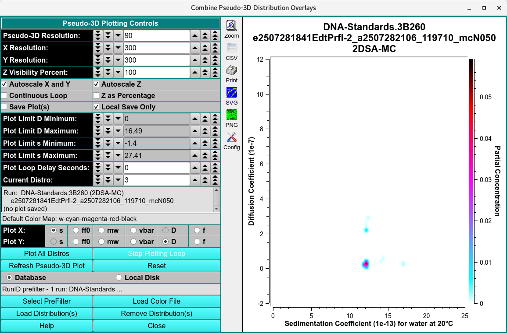

Pseudo 3-Dimensional Distribution Plots¶
Solution distribution data can be displayed in pseudo-3-dimensional form where the Z axis is simulated using colors in a color map. Data from different cells can be combined.

Functions¶
Pseudo-3D Resolution: |
Choose near-100 flattening parameter for Gaussian distribution of frequency points. |
X Resolution: |
Choose the number of pixels to represent the full X (Sedimentation Coefficient or Molecular Weight) data range. |
Y Resolution: |
Choose the number of pixels to represent the full Y (Frictional Ratio) data range. |
Z Floor Percent: |
Choose the percent of the Z (Frequency) range to add below the minimum Z in order to affect display of faint values. |
Autoscale X and Y |
Select to automatically set X and Y plot range limits or unselect to allow explicitly setting these values. |
Autoscale Z |
Select to automatically scale Z to the current distribution’s range or unselect to scale Z to the global Z range of all distributions. |
Continuous Loop |
Check this box if you wish to continually loop through plots of distributions. While in a continuous loop, the plots are not automatically saved for reports. |
Z as Percentage |
Check this box if you wish to have the Z (color-mapped) values plotted as Percent of Total Concentration instead of the default Partial Concentration values. |
Plot Limit f/f0 Minimum: |
Choose the lower plot limit for f/f0 (or vbar). |
Plot Limit f/f0 Maximum: |
Choose upper lower plot limit for f/f0 (or vbar). |
Plot Limit s Minimum: |
Choose the lower plot limit for sedimentation (or MW). |
Plot Limit s Maximum: |
Choose the upper plot limit for sedimentation (or MW). |
Plot Loop Delay Seconds: |
Choose the number of seconds to delay between plots when all distros are plotted. |
Current Distro: |
Choose the index (1 to n) of the distribution to make the current one. |
Plot f/f0 vs s |
Select to plot f/f0 versus sedimentation coefficient corrected for water at 20°Celsius. |
Plot f/f0 vs MW |
Select to plot f/f0 versus molecular weight (Dalton). |
Plot vbar vs s |
Select to plot vbar versus sedimentation coefficient corrected for water at 20°Celsius. |
Plot vbar vs MW |
Select to plot vbar versus molecular weight (Dalton). |
Plot All Distros |
Loop to successively plot all loaded model distributions. |
Stop Plotting Loop |
Stop the successive plot of all loaded model distributions. |
Refresh Pseudo-3D Plot |
Refresh the pseudo-3d plot with current settings, current color map and current distribution data. |
Reset |
Reset parameters to their default settings. |
Database |
Select to specify data input from the database. |
Local Disk |
Select to specify data input from local disk. |
Select PreFilter(s) |
Select Run(s) as Models Pre-Filter dialog to select Run IDs. This can significantly reduce model loading time, particularly with large model counts in the database. The text box to the right of this button will display a summary of runs selected as pre-filters. |
Load Color File |
Load a color map for Z dimension display as specified through the Color Map Load dialog. |
Load Distribution(s) |
Load model distribution data as specified through a Model Loader dialog. Multiple distribution files may be selected. |
Remove Distribution(s) |
Open a Remove Model Distributions dialog to remove selected model distributions from the loaded set. |
Window Controls
Help |
Display this detailed Fit Meniscus help. |
Close |
Close all windows and exit. |